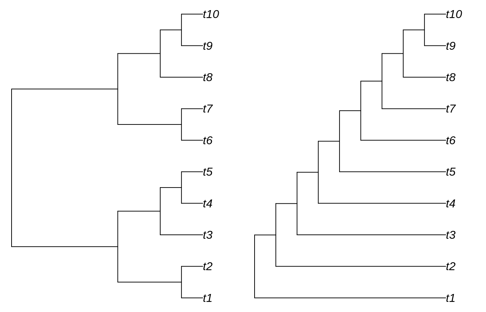

uspr is a package to compare phylogenetic trees.
To load the uspr library into the R namespace, use
This vignette assumes familiarity with the process of loading trees into R.
We’ll work with some simple trees generated using the TreeTools package.
library('TreeTools')
tree1 <- BalancedTree(10)
tree2 <- TreeTools::PectinateTree(10)
par(mfrow=1:2, mar=rep(0.2, 4)) # Set up plotting area
plot(tree1)
plot(tree2)
To generate an approximate SPR distance between two unrooted trees, use:
## [1] 2For Replug distances, it’s:
## [1] 2For TBR distances, use:
## [1] 1When calculating an exact TBR distance, we receive information on the maximum agreement forest for free (i.e. with no extra processing cost):
## $tbr_exact
## [1] 1
##
## $maf_1
## [1] "((t4,t5),t3,(t1,t2)); ((t7,t6),(t9,t10),t8);"
##
## $maf_2
## [1] "((t1,t2),(t4,t5),t3); ((t6,t7),(t9,t10),t8);"Once trees have more than about a dozen tips, it becomes slow to calculate the exact distance. In the interests of speed, we may wish to approximate the value of the TBR distance:
## $tbr_min
## [1] 1
##
## $tbr_max
## [1] 3To avoid multiple calls, each function can also be used to compare lists of trees (or multiPhylo objects) against a single tree:
## $tbr_exact
## [1] 0 1
##
## $maf_1
## [1] "((((t1,t2),((t4,t5),t3)),(t6,t7)),(t9,t10),t8);"
## [2] "((t4,t5),t3,(t1,t2)); ((t7,t6),(t9,t10),t8);"
##
## $maf_2
## [1] "((((t1,t2),((t4,t5),t3)),(t6,t7)),(t9,t10),t8);"
## [2] "((t1,t2),(t4,t5),t3); ((t6,t7),(t9,t10),t8);"Or against each corresponding entry in a second list:
## [1] 2 2 0If you use uspr in your research, please cite:
Optionally, a citation to this R package would be welcome: